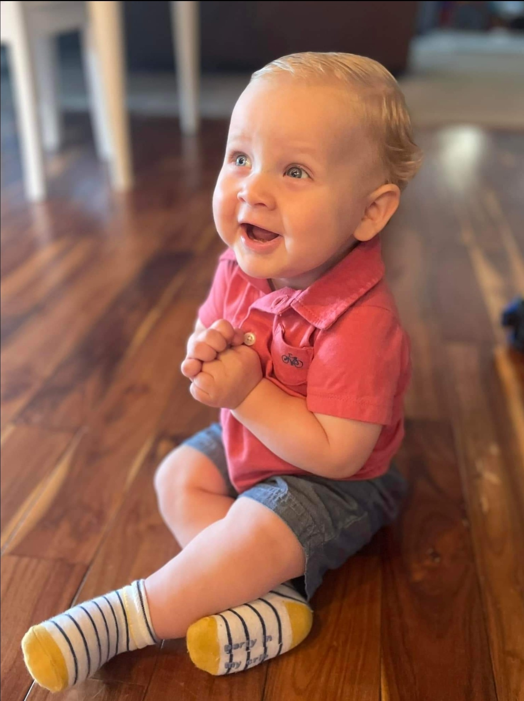
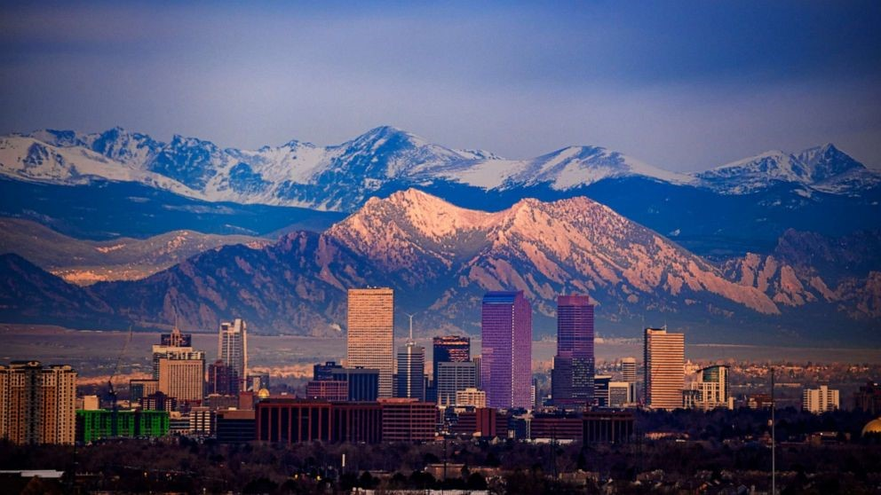
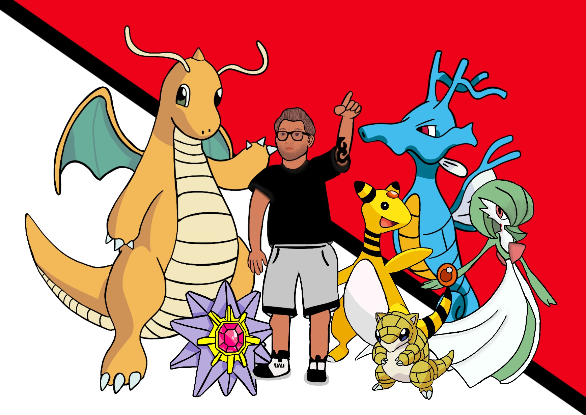

"Wade"I'm 33 years old. I'm a German-Mexican, Dad.
I have a wife, and a 1 year old son with another child on the way.
(I know, two under two, save me) And that is a big reason why I am trying to become a Computer Programmer so my wife doesnt have to take on most of the burden of finances for our family.
I was born and raised between Texas and Colorado. I now live in Dayton OH and have been here for about 7 years.
I moved here because my dad got relocated for his job and so I decided to move along with them to stay close.
Music
"Deja Entendu by Brand New"Music, besides family, is the most important thing to me. It has gotten me through tough times, that I could not see myself getting through.
For me, I can do anything while having music on around me. Unlike most, who need complete silence to focus, I use music to keep me focused in on
things that I have to really think about. I have a very wide range of music selection that I choose on depending on my mood. My Favorite type of music
to listen to is Pop Punk/Emo. When it was at its peek was the perfect time in my life because I was in highschool and we all know that highschool can be
rough. My Favorite Artist is Brand New and my favorite album is also by Brand New, called Deja Entendu. I also listen to Rap, Rock, and the occasional Pop and Oldies (like Motown).
Some of my favorite Artists include: Brand New, The Weeknd, The Used, Kanye West, Kid Cudi, J Cole, and Taking Back Sunday, to name a few. If you would like to see some
of the playlists ive made on Spotify, check out my profile. Travis Morris
Denver
Growing up for a short time in Denver CO means alot to me. Being in Texas most of my life, you dont get alot of different weather/seasons. Its either too hot and summer, or its winter. which is like a cooler fall
in most places in the north. I love cold weather, and hate hot weather. Colorado got hot at points but from what I remember, or romanticize as some would say, about Colorado is the weather was usually fair most of the year.
With the age I was, I started to grasp on different things like sports and have held on to those things since. If it was up to me, and not my wife, I would move back there yesterday. But i will say Ohio atleast has the seasons
like Colorado and it will have to do since both of our families are here.
Favorite Things

*Picture of me with my fav Pokemon*
I usually stay true to who I am and most of the things i enjoyed as a kid are still the same things I enjoy today.
Some of those things are:
Denver Nuggets
Denver Broncos
Wrestling
Pokemon
Star wars
Harry Potter
Watching and playing Basketball, Football, Basketball